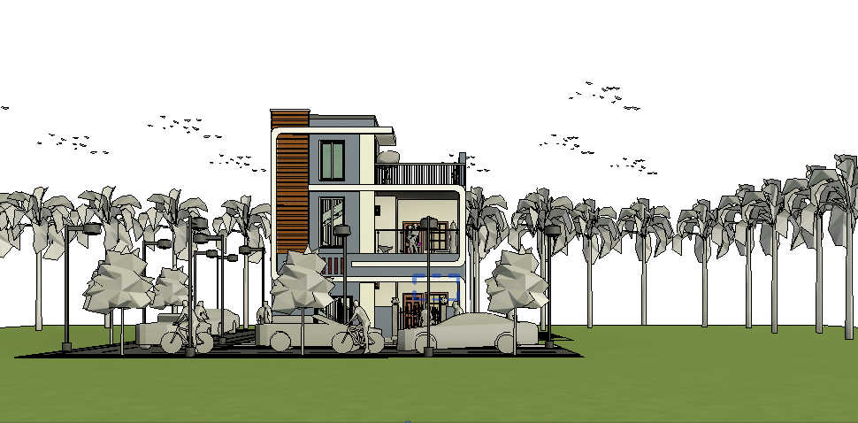
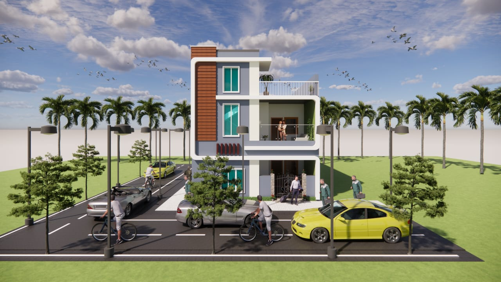
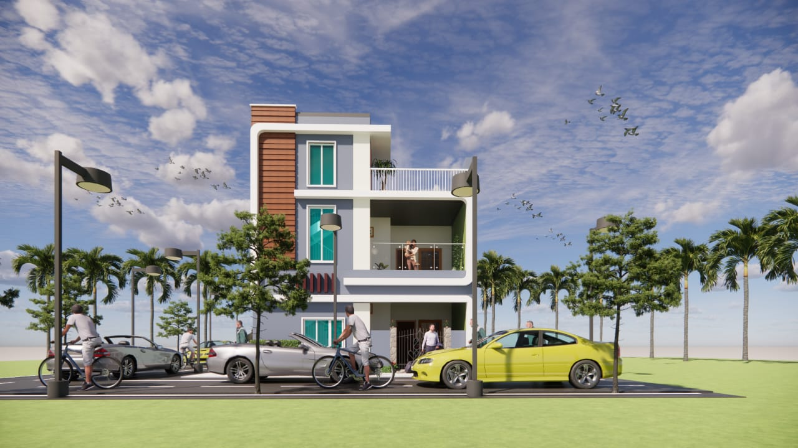

Modern Elevation Project

Initial Concept – Visualizing the Structure

Refining the Design – Material and Environment

Integrating Real-World Context and Liveliness
Final Model – Modern Urban Aesthetics
Final Visualization – Elegant Night Ambiance
❮
❯